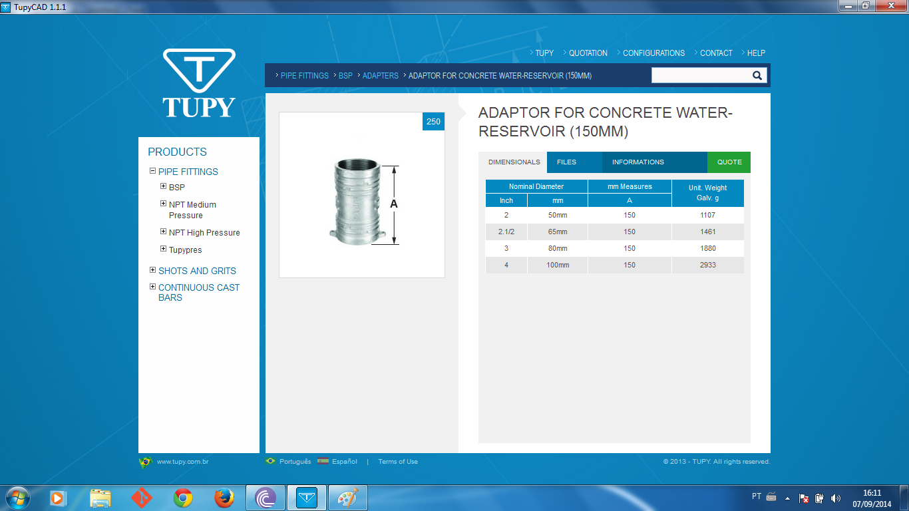

<div class="portfolio-single container">
        
    <div class="row">

        <div class="span8 portfolio-field portfolio-title">
            <h2>Qt and Webkit</h2>
        </div>

        <div class="span4 portfolio-field portfolio-nav">
            <a class="icon button back" href="#/portfolio">close</a>
        </div>

        <div class="span8 portfolio-field">
            
            
            
        </div>

        <div class="span4 portfolio-field">
            
            <h3>Description</h3>
            
            <p>The main goal was to develop a cross-platform (Windows and MAC) catalog and a AutoCAD plugin. Using C++ and Qt to emulate the Webkit, me and an extraordinary team came up with a powerful layer to communicate and incorporate HTML and Javascript templates with C++.</p>
            <p>We didn't had time to develop the layouts made by designers, because we already had a lot of implementations to do over the core, but we had a few web developers at disposal, so we integrated webkit core and wrote a few interfaces to communicate C++ and Javascript easily. At the end, not just the product was really good, but the core still has and enormous potential by himself to make the desktop cross-platform development more easy.</p>
            <p>This contributed a lot for my expertise in cross-platform C++ and low level deployment.</p>
            
            <h3>Client</h3>
            
            <p><a href="http://www.tupy.com.br/ingles/home/index.php" target="_blank">Tupy</a></p>

            <h3>Technology</h3>
            <ul class="tags">
                <li><a>C++</a></li>
                <li><a>Qt</a></li>
                <li><a>Webkit</a></li>
                <li><a>HTML/CSS</a></li>
                <li><a>Team Work</a></li>
            </ul>
            
            <div class="launch">
                <a href="http://tupy.collabo.com.br/landing" target="_blank" class="btn">LAUNCH PROJECT</a>
            </div>
        </div>

    </div>
</div>